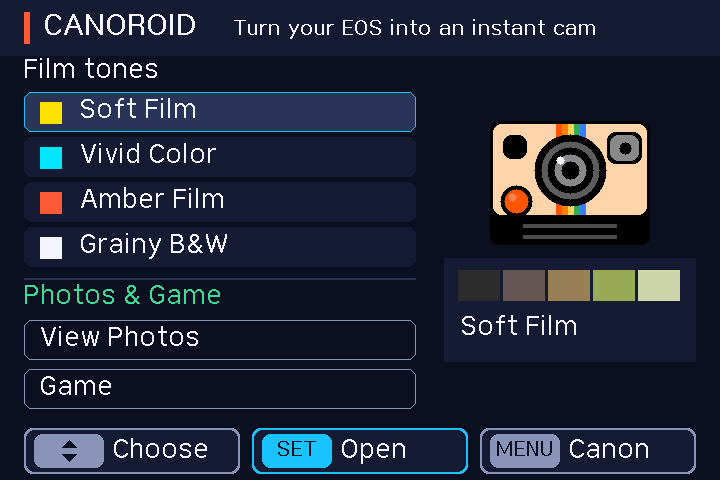
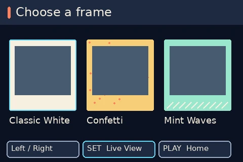
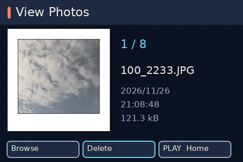
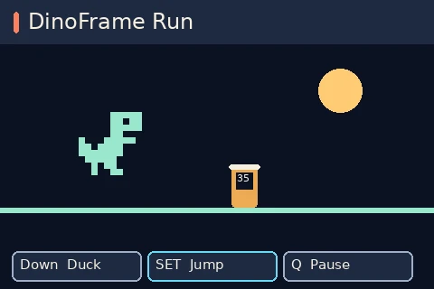

มาสนุกกับกล้องสไตล์ Polaroid
ลองเริ่มจากของใกล้ตัวสักชิ้น แก้วกาแฟใบโปรดหรือเจ้าแมวที่นอนเฝ้าตู้กล้องก็ได้ หมุนแป้นไปที่ P, Av, Tv หรือ M แล้วเลือก JPEG หรือ RAW+JPEG ถ้าอยากเก็บไฟล์ RAW ด้วย
ภาพจำลองหน้าจอแสดงปุ่มที่ใช้ในแต่ละขั้นตอน

เปิด Canoroid
จากหน้าถ่ายภาพ Canon กดปุ่มถังขยะ ครั้งแรกหลังเปิดกล้องจะเห็นหน้าปก 1 วินาที ครั้งต่อไปเข้าหน้าเลือกโทนทันที

Film tones · เลือกโทนและกรอบ
วันนี้อยากได้ภาพอารมณ์ไหน? ลอง Soft Film กับแสงเช้านุ่ม ๆ หรือ Vivid Color กับของเล่นสีสด ใช้ปุ่มทิศทางแล้วกด SET เลือกโทน จากนั้นลองเลื่อนดูกรอบทั้งเก้าแบบ เลือก No Frame เมื่อต้องการเฉพาะสีและขนาดเต็มของ JPEG ต้นฉบับ

Live View · เล็งแล้วถ่าย
กด SET เพื่อเข้า Live View ใช้เส้นกรอบเล็งภาพแล้วกดชัตเตอร์ทีละใบ รอให้กล้องทำภาพเสร็จก่อนถ่ายใบถัดไป

Your print · เปรียบเทียบภาพ
กดซ้ายหรือขวาเพื่อเทียบต้นฉบับกับผลลัพธ์ ภาพแบบมีกรอบขนาด 1080 × 1080 พิกเซล บันทึกเพิ่มใน DCIM/CANOROID กด SET เพื่อถ่ายต่อ หรือ PLAY เพื่อกลับหน้าแรก

View Photos · เปิดอัลบั้ม
เลื่อนดูผลงานที่ถ่ายไว้ ถ้าใบไหนอยากลบ กล้องจะลบเฉพาะสำเนาที่ Canoroid สร้าง

Game · พาไดโนเสาร์ออกวิ่ง
ระหว่างรอเพื่อนมาถ่ายรูป เข้าเมนู Game แล้วลองเล่น DinoFrame Run สักรอบ กด SET ให้ไดโนเสาร์กระโดดข้ามกลักฟิล์ม กดลงค้างเพื่อก้มหลบกล้อง พอเพื่อนมาถึงก็กด Q พักเกมได้เลย